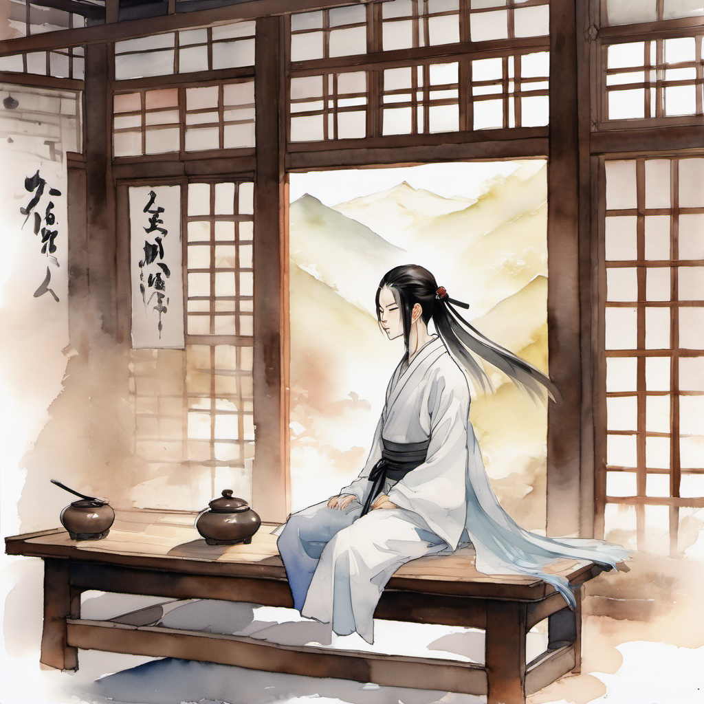
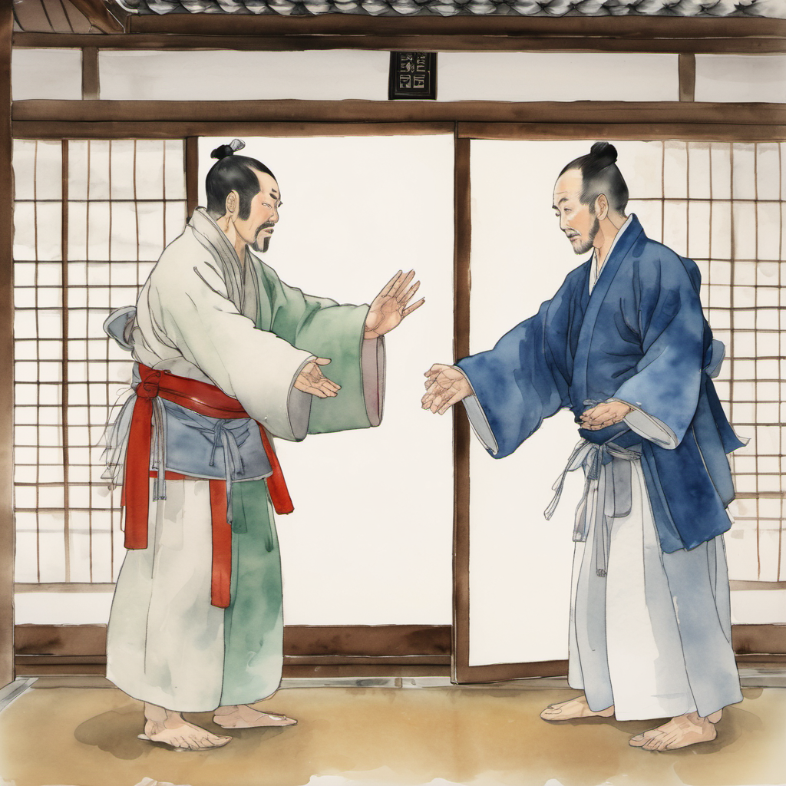
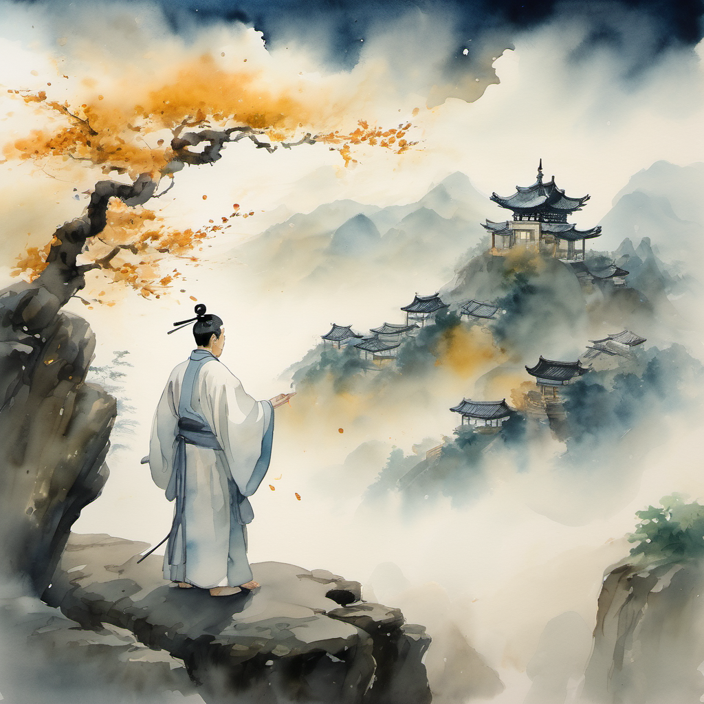
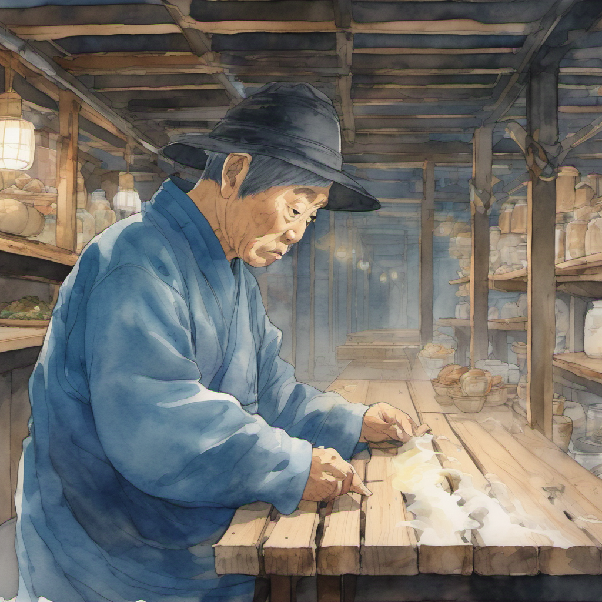
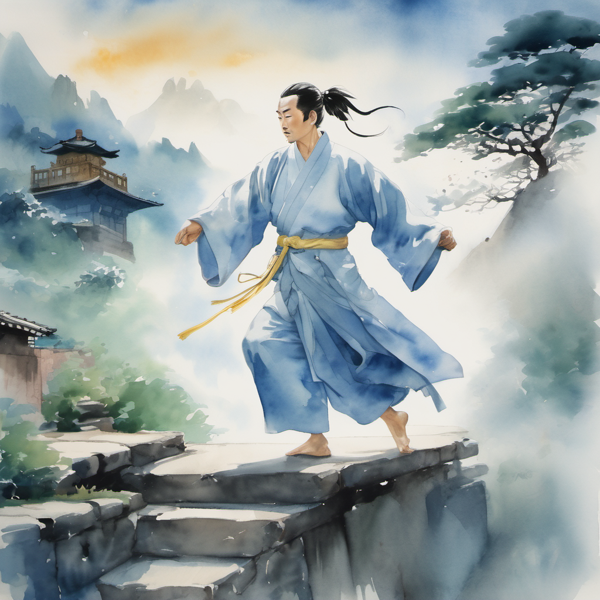
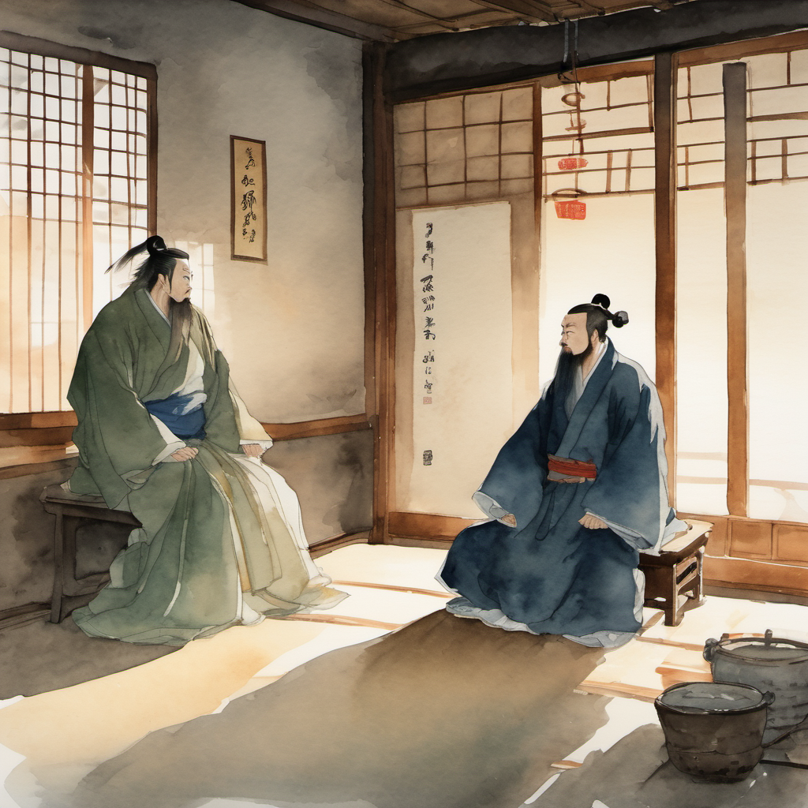

별실 1번 — 무당산의 잔영

별실 1번의 안쪽은 — 객잔의 다른 부분과 톤이 달랐다.
흙벽이지만 흙벽이 아니었다. 정주가 발을 들이미는 순간 시야가 한 번 정렬되었다. 흙벽의 텍스처 위에 — 무당산(武當山)의 구름 그림자가 한 겹 깔려 있었다. 글리치가 아니라 — 무당파의 검술이 만든 잔영이었다.
김용 선생의 의천도룡기에서 장삼봉이 한 번 검을 휘두르면 산봉우리의 구름이 한 번 흔들리는 그 묘사. 본 작품에서는 — 무당파 사절이 별실에 들어온 순간부터, 별실의 공간 자체가 무당산의 일부로 잠시 변환되었다.
그 안에 — 한 명이 앉아 있었다. 흰 도복. 검은 머리띠. 검집을 무릎에 가로로 놓은 청년. 나이는 — 30대 중반쯤.
포권의 예

청년이 자기 이름을 밝혔다. 그리고 — 일어나서 — 정주에게 포권의 예를 올렸다. 양손을 가슴 앞에 가지런히 놓는 그 자세.
정주도 한 번 — 어색하게 — 포권의 예를 올렸다. 50대 노동자의 손이라서 손가락이 한 번 떨렸다. 1권 7화에서 이방원이 정주에게 처음 포권의 예를 올렸을 때 정주는 그 자세를 안 따라 했었다. 그런데 본 화에서 — 처음으로 — 정주가 포권의 예를 올렸다.
청천의 균형 박자

청천의 말은 한 글자씩 박자에 맞춰 떨어졌다. 한 글자 한 글자가 정확히 같은 시간 간격으로 떨어졌다. 김용 선생의 의천도룡기에서 장삼봉이 태극권의 본맥을 설명할 때의 그 톤. 균형 — 균형 — 균형. 모든 것이 균형.
한진 41 컨베이어 박자

정주가 말했다.
청천이 잠시 침묵했다. 그의 검집 위에서 — 손가락이 한 번 떨렸다. 이것은 청천의 무공이 충격을 받았다는 의미였다.
태극권 첫 본맥 — 진(進) 퇴(退) 진(進)

청천이 자세를 잡았다. 양손을 가슴 앞에 가지런히 놓고 — 발을 한 걸음 앞으로 — 한 걸음 뒤로 — 다시 한 걸음 앞으로. 그것이 태극권의 첫 본맥이었다. 진(進) — 퇴(退) — 진(進). 무당파의 모든 무공이 — 이 세 걸음에서 — 시작된다.
별실의 공간이 한 번 더 정렬되었다. 흙벽 위의 무당산 구름 그림자가 — 청천의 박자에 맞춰 — 한 번 흔들렸다.
정주의 들쭉날쭉
정주는 — 자기 무릎의 시큰함을 — 그대로 — 따라갔다.
한 걸음. 그리고 — 무릎이 시큰거려서 — 반 걸음 — 그리고 — 다시 한 걸음. 진(進) — 시큰거림 — 진(進).
청천의 박자가 — 한 번 — 흔들렸다.
청천이 자세를 풀었다. 검집을 다시 무릎 위에 가로로 놓았다. 그의 표정에는 — 균형이 한 번 흔들린 흔적이 — 남아 있었다.
장삼봉 (張三豐) — 김용의 그림자

정주는 그 말을 듣고 — 잠시 — 침묵했다. 1권 1화의 메타 농담이 — 다시 한 번 — 떠올랐다. 자기가 만든 게임에 — 김용의 장삼봉이 — 등장한다는 사실.
정주가 한 번 — 한숨을 쉬었다.
도비 신수는 인천 옥탑방에서 — 발바닥을 한 번 — 더 강하게 — 펼쳤다. 발바닥의 신호가 — 무당파의 본 사부 — 의 박자를 — 감지했다. 그러나 도비 신수는 — 아직 — 잠을 깨지 — 않았다.
(2권 4화 끝)